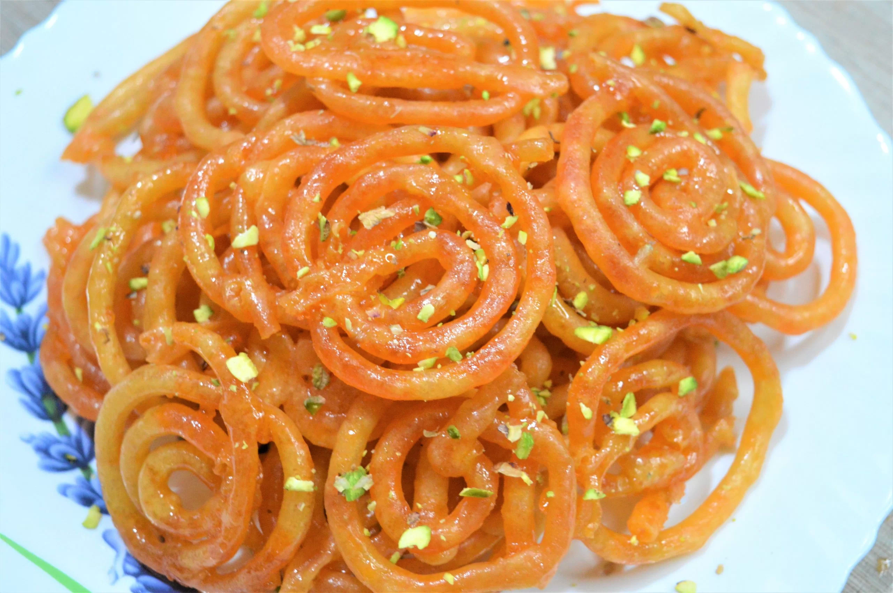

JALEBI

Jalebi is very popular sweet
Here's what you need
- 3 cups all purpose flour
- 1/2 cup corn flour
- 2 cups hung curd
- A pich of baking soda
- 1/2 cup ghee
- 2 cups sunflower oil
- 3 cups sugar
- 3 cups water
- 5 strands of saffron
- 3 cups water
- 5 strands of saffron
- 4 drops of rose essence 1/2 teaspoon powdered green cardamom
- 1/2 teaspoon food colouring
Method
-
In a bowl, mix together all purpose flour, cornflour,
and bakin soda. Then add ghee and the food colouring. Too make a thicker batter, add hung curd
and water. Mix well until it is thick but has a slighty flowing consistency. Keep it aside for
8-10
hours to ferment.
- Now, heat oil in a pen over medium heat for deep frying. Fill the jalebi batter into a piping bag
fitted
with a round tip. Pipe the batter into swirly circles and fry untill they are crispy and golden
- After frying , sack the jalebis into the sugar syrup for 2-3 minutws. Ensure that the syrup is warm and
not
vary hot Next, remove them From the syrup and place them on a tray lined with butter papaer or foil.
Decorate with silver foil (optional and serve hot.)
- To make the sugar syrup, heat water in a pan over medium heat. Add sugar and mix untill Fully
dissovled. Simmer the syrup until it reaches a string-like consistency. Add saffron, cardamom
powder,
and rose essence. Mix well